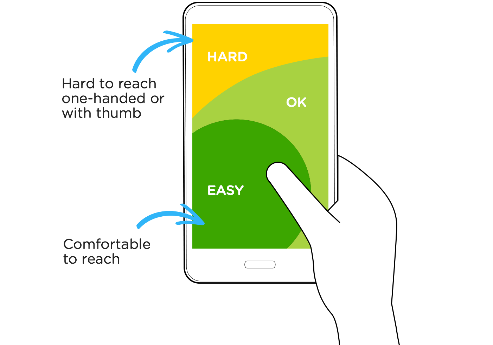

There are many think pieces out there making the claim that the web is primarily composed of 95% typography1,2. I’m not going to argue the science and accuracy of these claims, I bring it up because even if you don’t believe the stats, you can’t argue that there is a lot of reading done on screen based devices and it’s the graphic designer’s job to make sure all the content is presented in the most legible way possible.
Fortunately, HTML and CSS gives designers nearly unlimited control over the typography on a webpage. Not only can you choose an array of webfonts for different needs, you can determine the scale of headlines in relation to the paragraph copy, how to display lists, quotes, and much more. Once the web browsers started providing support for CSS3’s @media property visual designers gained even more control. Now, visual design can give instructions to web browsers to adjust the typographic scale based on specific pixel dimensions to create optimal reading lengths for headlines and paragraph copy. This means that you can now create instructions for the browser that tell it to display the typography at one scale for a smartphone, and another scale for a laptop or desktop computer.
Unfortunately, the ability to use HTML and CSS to control your typographic choices isn’t as straight forward as using layout programs like InDesign or Sketch. Both HTML and CSS have their own little nuances that you will need to learn to be a successful visual designer. Most likely you will be handing this work off to a front-end developer once you are working in the industry. However, if you don’t want them to make the typographic design decisions for you, it’s necessary to learn what HTML and CSS you can control as a designer when it comes to typography— basically 95% of the web!
While web typography needs both HTML and CSS to be adjusted, for learning purposes I think it’s best to split them into separate categories that are commonly referred to as: Structure and Presentation.
HTML is considered the “Structure” layer. Using HTML tags, you define specific contents of a web page so search engines and browsers know what to do with the information. For example, the <artcile> tag tells a search engine like Google that the content marked up is an article and a <h1> tag within an <artcile> tag tells the search engine the name of the article. With the advent of HTML53,4 there is a bevy of tags available to make certain that your web page’s content is found in a relevant search!
Where HTML falls short is how it typographically styles the marked up content. If you were to leave the default styling of a longer headline marked up with a <h3> tag, it could easily be mistaken for a pull quote. However, before you learn how to use CSS to change the default “Presentation”, you need to know the common HTML tags that affect the visual hierarchy of typography as well as the tag’s contextual function in search results. This and more will be covered in-depth in the following screencasts on HTML.
You will need to download these starter template files!
As discussed in the previous screencasts, the default styling of many HTML tags can lead to confusion for the user. Fortunately, visual designers have the ability to adjust the default styling with Cascading Style Sheets (CSS), also referred to as the “Presentation” layer. As a visual designer, you are technically not responsible for turning your mockups and prototypes into working code. There are a lot of nuances to modern front-end development that it would be hard for you to learn it all and master your visual design skills. However, there isn’t that much to learn when it comes to typography and CSS so it’s worth the effort to lean as much as you can!
In the following screencasts you will learn to use CSS selectors to target basic HTML elements. You will also use CSS properties and values to change the default typography on a web page. Finally, you will begin to use classes to target specific HTML elements.

This assignment will be worth 40 points.